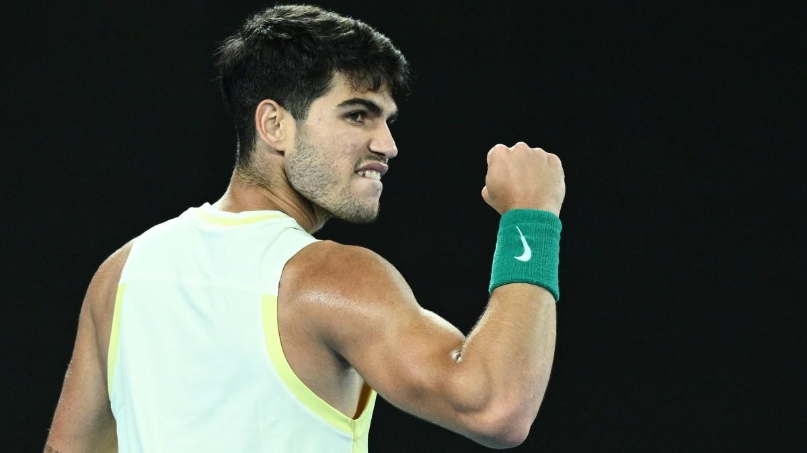

INICIO
CUADRO Y RESULTADOS
JUGADORES
TICKETS
EL CLUB
NOTICIAS

El bicampeón Carlos Alcaraz defenderá su título en el Conde Godo este 2024
Nadal juagará en Barcelona este 2024
Ya están a la venta los tickets del torneo 2024
El toreno se disputará tambien en la categoria sub-14
TROFEO CONDE GODO 2024
Mail: condegodo@gmail.com
REAL CLUB DE TENIS BARCELONA
Telefono: 987 345 374
Copyright 2024 ©